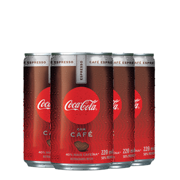

<!-- <!DOCTYPE html>
<html lang="pt-br">

    <head>
        <meta charset="UTF-8">
        <meta name="viewport" content="width=device-width, initial-scale=1.0">
        <title>Coca-Cola</title>
    </head>

    <body>
        <input type="text" id="qtdLatas" placeholder="Quantidade de Cocas"><br>
        <button onclick="verificarQtd()">Ver a quantidade</button><br>
        <div id="mensagemIMG"></div>
    </body>

</html>

<script>
    function verificarQtd() {
        mensagemIMG.innerHTML = '';
        for (var count = 1; count <= Number(qtdLatas.value); count++) {
            mensagemIMG.innerHTML += ``;
        }
    }
</script>

<!-- 8. Crie um programa no qual:
a) O usuário informe quantas "Coca-Cola" ele acha que já bebeu na vida
b) Ao clicar em "Ver a quantidade", devem aparecer na tela N garrafinhas (ou latas, se preferir) de "Coca-Cola" uma ao lado da outra, conforme a quantidade informada em a)
c) Para saber se seu programa está correto, teste algo assim: informe 20 e clique. Depois informe só 3 e clique novamente. Veja se vão aparacer só 3 garrafinhas (ou latas) na tela mesmo
OBS: se você é hater de refrigerantes e prefere algo mais saudável, pode trocar "Coca-cola" por suco de batata doce com morango, por exemplo.
 --> -->